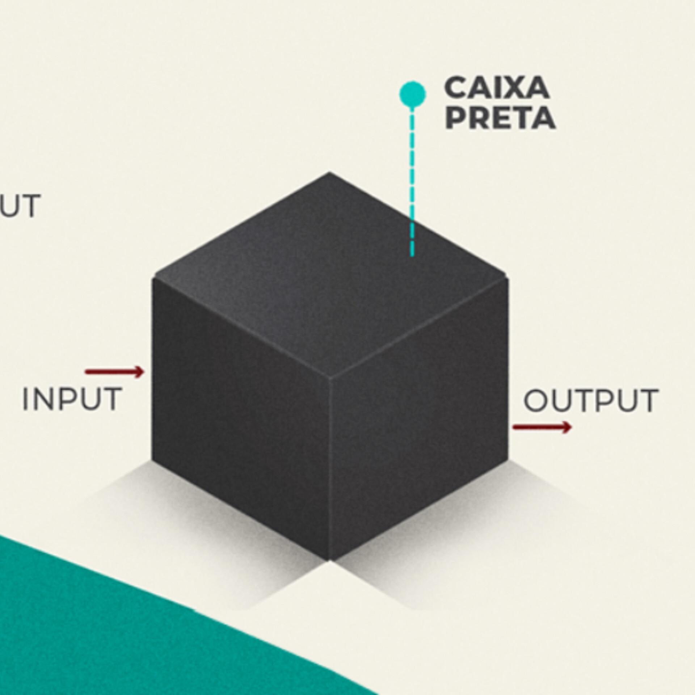

O teste de caixa preta é uma técnica de teste de software que avalia o comportamento de um sistema sem analisar seu código-fonte ou sua estrutura interna.
O objetivo é verificar se o sistema funciona corretamente a partir das entradas fornecidas e se produz os resultados esperados.
Dessa forma, o testador se concentra na funcionalidade do sistema, simulando situações que um usuário poderia realizar.
Esse tipo de teste é importante para identificar erros, falhas de funcionamento e problemas na interação com o usuário.